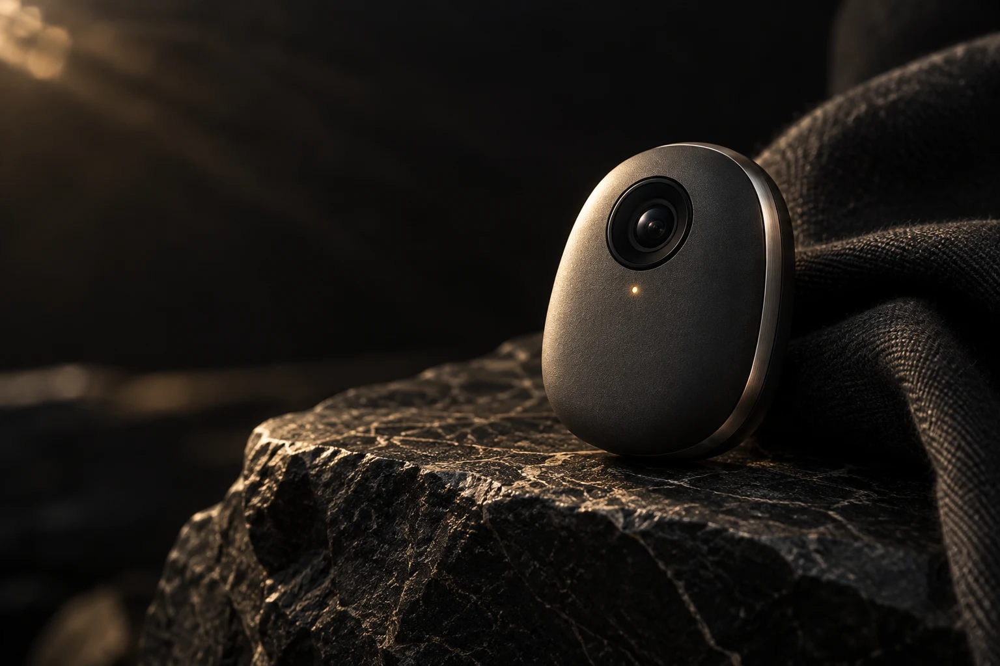

“What if we tried something completely different?”
Make space for the thought before the plan.
Meet Ava. Conversation, voice, and continuity in Synapses.
One familiar presence, with a new chapter beyond the screen.
App access is invite-only. Wearable is a concept.
Ava is the personality. Synapses is the app and intelligence.
Nexora is the home for the technology that brings them together.
Four ways a conversation can begin.
I have an idea. I’m not sure where to start.
Tell me the part you’re most excited about. We can find the starting point together.
Continue in Synapses ↗The experience described by Synapses, from conversation to context.
Explore the app to see its current availability and capabilities.
Follow an idea without having to turn it into a perfect prompt.
Meet Ava through spoken conversation in the Synapses app.
A companion experience built around the thread between conversations.
Make room to talk through what is on your mind.
Useful help begins with understanding what you mean.
Bring in the tools around the companion when they are useful.
Explore the thinking behind presence, memory, and interaction.
Discover our proposed wearable extension of the AVA experience.
Project AVA explores a physical companion for Synapses. The goal: bring chosen moments from your day into a conversation that already feels familiar.
Discover the wearable →
PROJECT AVA / CONCEPT DESIGN →Imagined conversations, not customer testimonials.
Make space for the thought before the plan.
A starting point that feels less like starting over.
Sometimes the useful part is the conversation.
Look at the question from another angle.
A companion for thinking, reflecting, and following your curiosity.
Meet Ava ↗A place to explore the half-formed idea before it has a name.
Follow a question further. Bring another perspective into the conversation.
Work through a decision without losing your own point of view.
Return to a familiar conversation between everything else.
A future wearable vision for the things that catch your attention.
You don’t need a project or a plan. Sometimes you just want to talk.
Our design principles for AVA’s wearable experience.
These are requirements we intend to validate before launch.
You should know when a device is recording and how to stop it.
Media access and user control are central to our hardware evaluation.
The wearable’s proposed Synapses integration needs to be built and tested.
Explore the existing app now. The wearable is not yet available to order.
Open Synapses. Meet Ava. See where the conversation goes.
Open Synapses ↗Existing app · Invite-only access